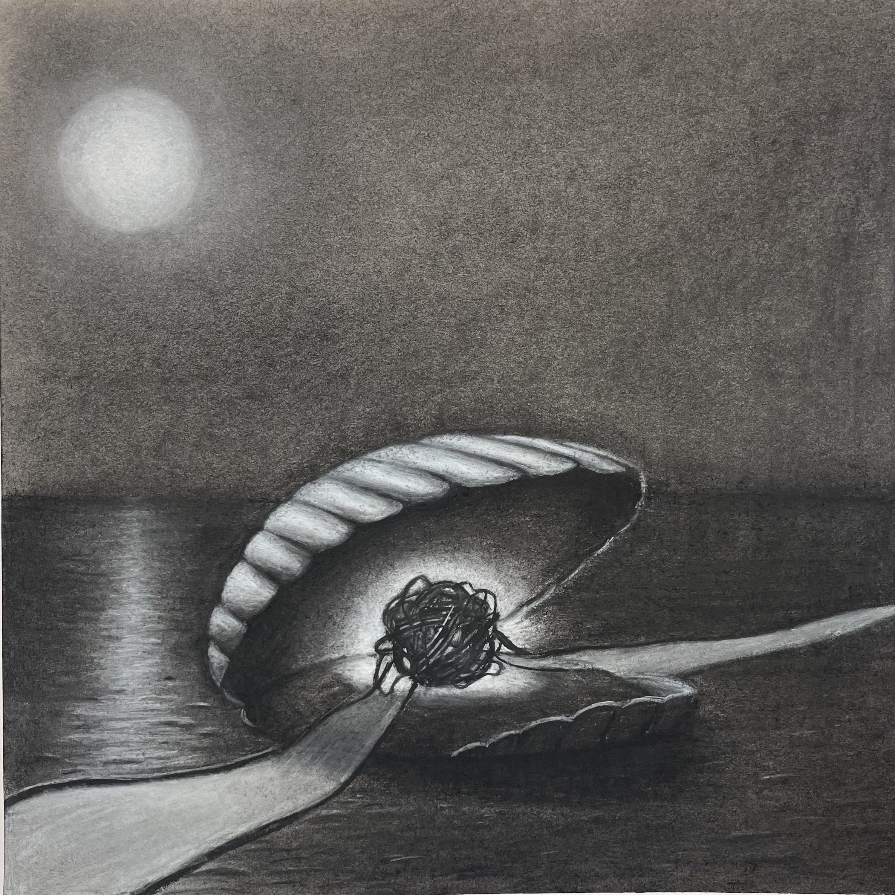

Concealed Within
- Media
- Charcoal
This piece represents staying concealed within oneself. Their shell protects the tangled mess of emotions within them. The buildings vary in size to represent how these emotions can fluctuate. The external light represents other people seem to shine in the vast ocean of life, undermining the individual battles each person might face when their own light becomes suppressed within them.
